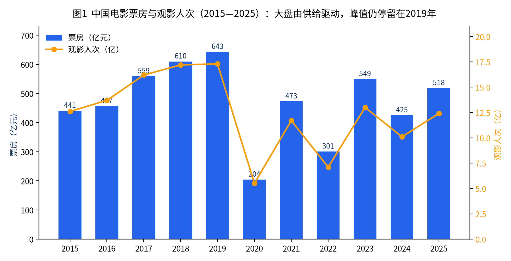
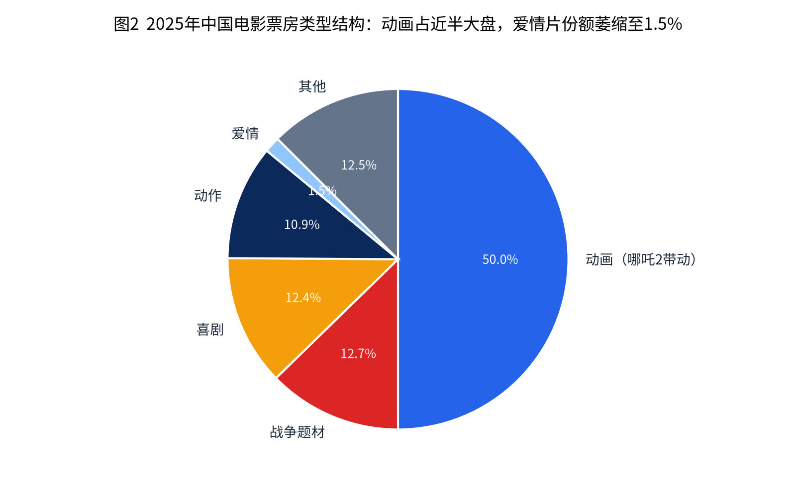
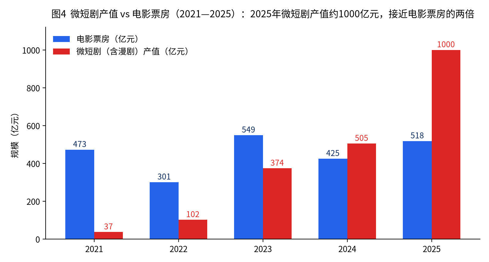
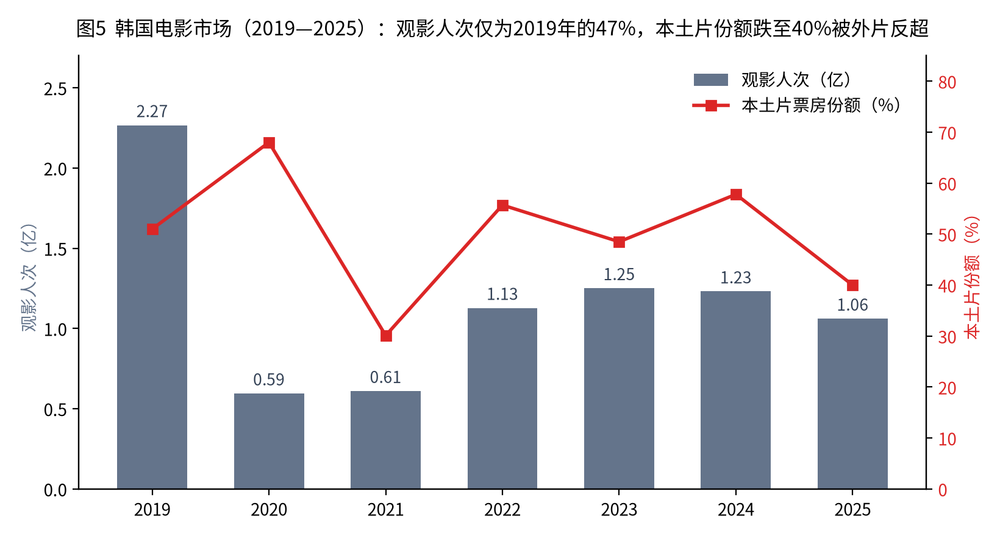
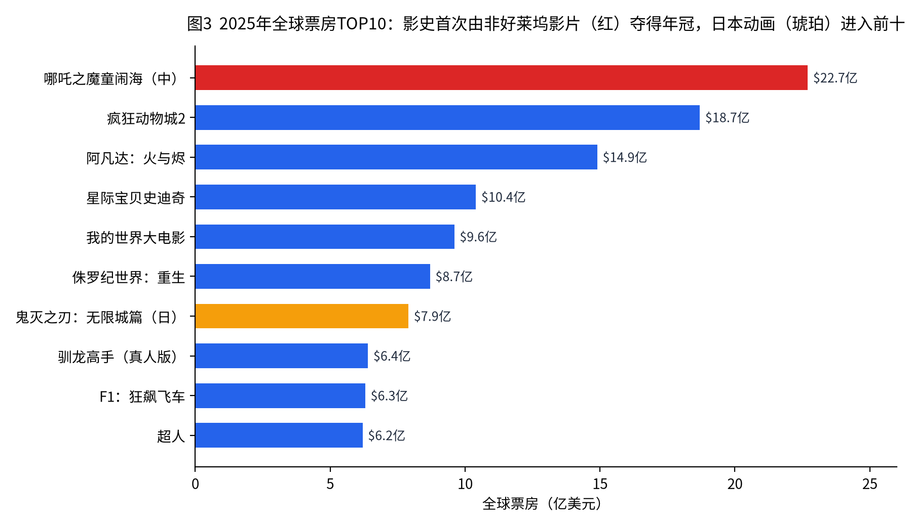

行业研究 · 影视传媒专题
中国电影市场深度分析报告
—— 制度、人群、供给、冲击与全球坐标下的产业前瞻
◆大盘：2025年票房518.32亿元（+21.95%），《哪吒2》以154.46亿单片拉动近三成
◆制度：获"龙标"影片同比腰斩至373部，供给收缩成为产业最大风险
◆人群：情绪对位取代类型偏好，"平视小人物"美学接管青年文化
◆冲击：微短剧产值约1000亿元、接近电影票房两倍，2025年为"AI短剧元年"
◆全球：全球票房约335.5亿美元，影史首次由非好莱坞影片夺得年度冠军
◆镜鉴：韩国本土片份额跌至40%，为中国提供"压力测试预演"
核心数据速览(2025年度)
| 指标 |
数值 |
同比 |
| 中国全年电影票房 |
518.32亿元 |
+21.95% |
| 城市院线观影人次 |
12.38亿 |
+22.57% |
| 国产片票房占比 |
79.67%(412.93亿元) |
— |
| 全年生产影片 |
764部(故事片511部) |
— |
| 获公映许可证("龙标")影片 |
约373部 |
-48.6% |
| 备案立项影片 |
2342部 |
-14.2% |
| 银幕总数 |
93,187块(净增2219块) |
— |
| 微短剧+漫剧全年产值 |
约1000亿元 |
接近电影票房的两倍 |
| 全球票房 |
约335.5亿美元 |
+12%(按历史汇率) |
| 全球年度票房冠军 |
《哪吒之魔童闹海》22.7亿美元 |
影史首次由非好莱坞影片夺冠 |
| 韩国全年票房 |
1.047万亿韩元 |
-12.4%(本土片份额跌至约40%) |
一、发审制度与"看不见的电影":制度缺陷与文化背景
1.1 制度框架:一备二审与"龙标"
中国电影管理实行剧本(梗概)备案 + 影片审查的"一备二审制",法律依据是《电影产业促进法》(2017年施行)与《电影管理条例》。基本流程为:
- 备案立项:开拍前剧本梗概报省级电影主管部门备案;涉及国家安全、外交、民族、宗教、军事、公安、司法、历史与文化名人、敏感历史事件等"特殊题材",须征得相关主管部门意见;重大革命和历史题材、重大文献纪录片、中外合拍片须报国家电影局立项审批。
- 成片审查:摄制完成后送审,省级初审、国家电影局终审,通过后颁发《电影公映许可证》——片头4秒的"龙标"。未获龙标的影片不得发行、放映、进口、出口。
1.2 数据揭示的"漏斗":从备案到上映的高损耗
2025年的供给侧数据呈现出一个急剧收窄的漏斗:备案立项2342部(同比-14.2%),获龙标影片仅约373部(同比-48.6%),全年新上映约448部(含往年获证影片与进口片)。对照产量口径,全年生产影片764部、故事片511部,而票房过亿影片仅51部。也就是说:
- 从"备案"到"获证"的转化率长期低于三成,且2025年获证数量近乎腰斩;
- 从"获证"到"有效上映"(获得可感知排片)之间还存在第二道漏斗;
- 从"上映"到"回本"之间存在第三道漏斗——2025年单片《哪吒之魔童闹海》占大盘近三成,头部之外的腰部影片生存空间被极度压缩。
大量影片停留在"备案未拍""拍完未审""过审未映"的中间态,形成业内所称的积压片现象。典型案例如《九龙城寨之围城》从开机到上映历时约7年、《彷徨之刃》拍完后沉寂4年才定档。积压原因混合了审查修改、出品方资金链断裂、档期博弈等多重因素,但审查的不确定性是其中最难以由市场主体自行管理的变量。
1.3 制度缺陷的结构性分析
从制度经济学角度,现行发审体系存在五个可辨识的结构性问题:
(1)标准的模糊性与结果的不可预期性。《电影产业促进法》列举的禁止内容(危害国家统一、宣扬淫秽赌博暴力、诋毁民族优秀文化传统等)属于原则性条款,缺少可操作的细则与判例公开机制。同一尺度在不同年份、不同题材、不同审查语境下伸缩明显,制片方只能靠"经验、人脉与试错"来估计过审概率。这实质上是把政策风险转嫁给了产业资本。
(2)缺少分级制,导致"就低不就高"的内容天花板。中国是全球主要电影市场中少数不实行分级制的国家。所有过审影片默认面向"全年龄",审查尺度必须按最保守的观众群设定,惊悚、犯罪、社会批判、性与暴力等成人向表达空间被系统性压缩。分级缺位同时伤害两端:创作者失去表达空间,家长失去对未成年人的甄别工具。
(3)事前审查+全流程干预的高成本模式。审查不仅发生在成片阶段,还前置到剧本备案、后延到宣发物料、档期,甚至上映后仍可能因舆情下映(近年多部影片"技术原因"撤档)。全流程的不确定性显著抬高融资成本——影视项目本就是高风险资产,叠加政策风险后,金融机构与外部资本对内容行业的风险定价进一步恶化,这是2018年影视资本退潮之后行业融资难的重要底层原因之一。
(4)特殊题材协审机制造成"部门否决权"叠加。涉军、涉警、涉司法、涉历史的题材需相关部委协审,任何一个协审部门的保留意见都可能使项目搁浅。结果是现实题材创作向"安全区"收敛:警匪片倾向境外叙事(如东南亚犯罪题材)、司法题材倾向正面歌颂式呈现,真正触及体制内部张力的叙事极其稀缺。
(5)申诉与救济机制薄弱。复审机制存在但透明度低,未过审影片通常得不到公开、具体的理由说明,也缺少第三方仲裁通道。影片被"无限期搁置"与被"明确否决"之间界限模糊,制片方连止损决策都难以做出。
1.4 文化与历史背景:为什么是这样的制度
发审制度并非凭空产生,理解它需要三个背景维度:
- 文以载道的治理传统。从古代"教化"观念到近代救亡叙事,中国的主流政治文化始终把文艺视为意识形态工具与社会教化载体,而非单纯的私人消费品。电影自延安时期起就被纳入宣传体系,"寓教于乐"中"教"的优先级在制度设计中高于"乐"。
- 管理体制的路径依赖。电影管理职能2018年由原广电总局划入中央宣传部(对外保留国家电影局牌子),标志着电影被进一步确认为意识形态阵地而非普通文化产业。审查权向上集中与"属地初审"下放并存,形成"收放循环":市场过热或舆情敏感期收紧,产业困难期放松(如2023-2024年一批积压片集中获准上映即被解读为纾困信号)。
- 社会共识层面的"保护主义"文化。相当一部分公众(尤其是家长群体)对暴力、色情、"三观不正"内容持强干预立场,分级制多次讨论未果,既有管理部门不愿让渡裁量权的因素,也有社会舆论对"分级=开放尺度"的疑虑。审查制度在民意层面并非没有支撑,这是与西方语境讨论审查时最大的不同。
1.5 小结与改革方向研判
短期内取消事前审查不具现实可能,但边际改良存在明确空间:审查标准细则化与案例公开、承诺时限与说明理由义务、艺术影院线/电影节展的差异化尺度试点(参考"全国艺联"扩容)、以"分线发行"间接实现事实上的受众分层。2024年起推行的分线发行改革,客观上为小众、尖锐题材提供了一个不与主流大盘争空间的出口,值得持续观察。
二、中国新人群:对主流文化的抵触与自我审视在电影上的投射
2.1 新观影人群的画像变迁
猫眼、灯塔近年数据显示,中国观影人群呈现三个结构性变化:观众平均年龄持续上移(购票用户中25岁以下占比从2019年的约30%降至2024年的约20%上下),女性观众决策权重上升(多个爆款如《消失的她》《热辣滚烫》女性购票占比超60%),下沉市场(三四线)成为春节档等节日档期的主力增量。这意味着"年轻人正在离开电影院"与"留下来的观众更挑剔"同时成立。
2.2 "抵触"的真实结构:不是反对宏大,而是拒绝说教
Z世代与"后Z世代"并非笼统地抵触主流文化——《哪吒之魔童闹海》154.46亿的票房本身就建立在传统神话IP之上,《南京照相馆》30.17亿证明历史民族叙事仍有巨大动员力。他们抵触的是三样更具体的东西:
- 说教感与被规训感:直给式的价值观灌输、口号式台词、脸谱化的正面人物。同为主旋律,《长津湖》式的机构化叙事与《南京照相馆》以照相馆小人物视角切入的叙事,在年轻观众中的口碑差异清晰可见。
- 虚假感:悬浮的都市剧、失真的青年生活呈现。年轻观众对"成功学叙事"(买房、升职、婚恋圆满作为默认人生模板)的抵触,本质是现实体感(内卷、性价比生活、婚育推迟)与银幕叙事的错位。
- 被代表感:由中年创作者想象出来的"年轻人"。弹幕文化、二创文化培养出的participatory audience(参与式受众)要求叙事留出解读与再创作空间,而非封闭的标准答案。
2.3 自我审视的投射:什么样的表达在被选中
近年爆款的共性指向了年轻人的自我审视主题:
- 《哪吒》系列:"我命由我不由天"——对出身论、标签化的反抗,魔丸设定精准对应"小镇做题家""差生"的身份焦虑;《哪吒2》中对"仙界规则"的质疑进一步触碰了对权威体系公正性的怀疑。
- 《浪浪山小妖怪》(2025,17.19亿):无名小妖的"打工人"叙事,直接把《西游记》宏大叙事的边角料变成主角——这是"反宏大叙事、平视小人物"审美的教科书式胜利,也是B站《中国奇谭》网络口碑向院线转化的成功案例。
- 《热辣滚烫》《好东西》:女性主体性、身材焦虑、非典型家庭结构——自我接纳类主题的商业化验证。
- "发疯文学""躺平""脱不下的长衫"等网络情绪尚未被院线电影充分承接,反而被微短剧以"逆袭爽感"的方式廉价代偿(详见第六节)。
趋势判断:年轻人群的观影决策已经从"看什么类型"转向"这部电影是否与我有关"(情绪对位 > 类型偏好)。社交平台的"情绪切片"传播(短视频切条、金句截图)成为票房杠杆,这解释了为什么2025年"大片模型"失灵而情绪精准的中小成本影片能以小博大。对内容生产者的含义是:价值观不能预制,必须与观众"共同完成";留白、可解读性、可二创性本身就是商业资产。
三、专业影业公司在方向审美与题材选择上的盲点
3.1 头部影企的路径依赖
中影、光线、博纳、万达、儒意、华谊、北京文化等专业影业公司,过去十年形成了各自的"舒适区":博纳的主旋律商业化、光线的动画与青春片、万达的档期商业片、中影的全产业链与重点影片。路径依赖带来了可复制的成功,也制造了系统性盲点:
(1)档期依赖症与"大片迷信"。资源过度集中于春节档、暑期档、国庆档,全年冷热失衡持续加剧(2025年多个平常周末大盘不足亿元)。而2025年的教训是:传统"大片模型"(大IP+大明星+大特效)不再是票房保障——《封神第二部》12.39亿远低于预期,多部S级项目亏损;反而《南京照相馆》《浪浪山小妖怪》等非顶级配置影片成为利润王。
(2)对"她经济"与女性叙事的迟钝。购票决策端女性占比已过半,但绿灯委员会与导演梯队仍以男性为绝对主导,女性题材长期被窄化为"爱情片"。《好东西》《出走的决心》的成功更多来自创作者个体突围而非公司战略布局。
(3)对动画的长期低估与突然过热。动画电影2025年贡献超252亿票房(近半个大盘),但全年动画上映数量反而减少4部——产能没有跟上。光线以外的头部公司几乎都错过了动画工业化的十年建设期,如今一拥而上立项神话IP动画,大概率在3-4年后形成同质化踩踏。
(4)现实题材的"安全化处理"。社会话题片被简化为"话题营销片":取一个社会痛点(缅北诈骗、家暴、拐卖),用类型片外壳完成情绪宣泄,但回避结构性追问。观众正在对这种"痛点消费"产生抗体,2025年多部话题片票房口碑双低即是信号。
(5)审美的"平台化"与数据依赖。过度依赖猫眼/灯塔想看指数、抖音热度做绿灯决策,导致"数据能证明的过去"不断被重拍,"数据无法预测的未来"无人下注。《哪吒1》《流浪地球1》立项时都属于数据模型之外的冒险——而这类冒险在当前融资环境下正变得越来越少。
(6)海外市场的战略缺位。《哪吒2》海外票房仅4亿多元人民币(占其总票房不足3%),对比其国内统治力,暴露了中国影企在国际发行、本地化营销、多语言版本上的能力空白。相比之下,中国微短剧出海应用已超300款、2025年海外收入预计超20亿美元——传统影企在全球化上已落后于新业态。
3.2 盲点的共因
上述盲点的共同根源是决策层与核心观众的代际断裂(决策者多为60-75后,核心增量观众为95-10后)、融资收缩下的风险厌恶(宁可押注"被验证过的成功")以及审查不确定性带来的题材自我设限(第一节所述政策风险内化为企业的自我审查)。三者互相强化,形成创新抑制的闭环。
四、社会深度诉求与影视产品供给的悖论
4.1 悖论的表述
当下中国社会正处在剧烈的结构转型期:经济增速换挡、就业与阶层流动焦虑、老龄化与少子化、城乡与代际价值观撕裂、性别议题激烈交锋。社会对"被讲述、被理解、被回应"的深度诉求空前强烈;但影视供给端恰恰在此时收缩了深度表达——2025年获龙标影片数量腰斩,现实题材要么缺席要么被安全化处理。需求最旺盛的地方,供给最稀缺,这就是悖论的核心。
4.2 悖论的四重机制
- 政策机制:越是深度的社会议题(劳资、司法、基层治理、历史反思),越靠近审查敏感区;创作者的理性选择是绕开,于是深度诉求在正规供给中系统性缺位。
- 资本机制:影视资本经历2018年税务风暴、疫情、爆雷潮后极度避险,深度题材=高政策风险+低爽感=融资困难。资本流向确定性更高的续集、IP、节日档合家欢。
- 媒介机制:被院线拒绝的情绪需求并不会消失,而是被微短剧、短视频、网络文学以"爽感代偿"的方式接住——赘婿逆袭、战神归来、恶婆婆被打脸,用即时快感替代结构性理解。代偿性供给越发达,深度供给的商业空间反而被进一步侵蚀,形成劣币驱逐效应。
- 评价机制:舆论场的极化使深度表达两面受敌——批判现实会被指"抹黑",呈现主流会被指"洗白"。《隐入尘烟》上映后先获口碑逆袭再遭下架,是这一机制的标志性事件:它证明了深度诉求的真实存在(票房逆袭),也证明了系统对这种诉求的容纳上限。
4.3 悖论中的例外与出口
悖论并非铁板一块。《我不是药神》(31亿,直接推动药品政策讨论)、《第二十条》(正当防卫议题)、《孤注一掷》(38.5亿,电诈议题)证明:当深度议题与国家治理议程同向时,会获得罕见的表达窗口,且商业回报巨大。这提示了一条现实路径——"政策顺周期的现实主义":在治理议程(反诈、司法改革、生育支持、劳动者权益)与公众情绪的交集处选题,是当前环境下深度表达的最大公约数。风险在于,这条路径把"什么可以被深度讨论"的定义权让渡给了议程设置方,长期看仍是表达空间的结构性收窄。
五、票房变化趋势与上映内容的关系:火爆的题材、缺乏的题材与经典电影的价值观影响
5.1 十年票房曲线与内容供给的对应关系
| 年份 |
全国票房(亿元) |
关键内容变量 |
| 2015 |
440.7 |
《捉妖记》《夏洛特烦恼》,资本涌入、银幕高速扩张 |
| 2016 |
457.1 |
增速骤降,票补退坡,挤水分 |
| 2017 |
559.1 |
《战狼2》56.9亿,主旋律商业化元年 |
| 2018 |
609.8 |
《红海行动》《我不是药神》,现实题材爆发 |
| 2019 |
642.7 |
历史峰值;《哪吒1》50亿、《流浪地球》46亿,工业化元年 |
| 2020 |
204.2 |
疫情;《八佰》全球年度亚军 |
| 2021 |
472.6 |
《长津湖》57.75亿,主旋律峰值 |
| 2022 |
300.7 |
疫情反复+供给枯竭双杀 |
| 2023 |
549.2 |
复苏;《满江红》《孤注一掷》,话题片模式成熟 |
| 2024 |
425.0 |
供给危机显性化:头部缺位,观众流失至短剧/短视频 |
| 2025 |
518.3 |
《哪吒2》154.46亿单极拉动;动画252亿占近半大盘 |

中国电影票房与观影人次趋势(2015-2025)
核心规律非常清晰:中国电影大盘是"供给驱动"而非"渠道驱动"。银幕数从2015年约3.2万块增至2025年9.3万块,但票房峰值仍停留在2019年——渠道扩张早已边际失效,每一次大盘起落都精确对应着头部内容的有无。2024年跌至425亿与2025年反弹至518亿之间,变量就是一部《哪吒2》加上《南京照相馆》《浪浪山小妖怪》等腰部惊喜。这也暴露了市场的脆弱性:2025年扣除《哪吒2》后大盘约364亿,实际低于2024年扣除头部后的水平;51部过亿影片的数量也掩盖不了腰部影片(5-10亿区间)数量与票房双降的事实。
5.2 火爆的题材:四条被验证的赛道
- 神话/传统文化IP动画:《哪吒》系列、《长安三万里》《浪浪山小妖怪》《聊斋:兰若寺》。底层逻辑是文化认同+全年龄+无明星风险+衍生品长尾(《哪吒2》衍生品销售额达数百亿元级,开创"内容+产业"双轮驱动)。2025年动画票房252亿、同比增长182.6亿,是当前最强赛道。
- 历史创伤与民族记忆:《南京照相馆》30.17亿、《731》19.43亿。抗战胜利80周年的档期红利之外,反映的是民族主义情绪的稳定基本盘;但同质化立项已在路上,窗口期有限。
- 强类型犯罪/动作:《捕风追影》12.66亿证明纯类型片(成龙+梁家辉配置)仍有稳定受众;悬疑犯罪片凭借"电影感强、必须进影院怕剧透"的属性,是抗短视频侵蚀能力最强的真人类型。
- 情绪对位的中小成本影片:女性成长、小人物尊严、治愈系。以小博大的核心是社交媒体情绪杠杆。

2025年中国电影票房类型结构
5.3 缺乏的题材:六个明显的供给空洞
- 硬科幻:《流浪地球3》(定档2027)之外几乎断档,工业能力建成了,但敢投的公司没有跟上;
- 成人向剧情片/中年叙事:35岁以上观众占比上升,但服务他们的严肃剧情片极少——这是韩国《寄生虫》、日本《小偷家族》证明过的市场;
- 爱情片:2025年份额萎缩至1.5%,几乎归零。婚恋观剧变后,旧式爱情叙事失效,新式亲密关系叙事(非婚、单身、多元家庭)又受表达限制;
- 喜剧:2025年喜剧票房下滑71.4亿,沈腾贾玲式喜剧进入疲劳期,新喜剧人才断层;
- 儿童/合家欢真人电影:动画之外,面向家庭的真人内容几乎空白(对比好莱坞《帕丁顿熊》类产品线);
- 纪录片与艺术电影的院线通道:分线发行刚起步,常态化的艺术片观众培育体系尚未成形。
5.4 改革开放后经典电影对文化流行趋势与价值观念的影响
中国电影在改革开放后的每个阶段,都深度参与了社会价值观的塑造:
- 1980年代——伤痕与启蒙:《庐山恋》(1980)让"爱情"重新成为可以公开谈论的词,片中吻戏成为社会解冻的文化符号;谢晋《芙蓉镇》(1986)以个体命运反思历史,确立了"人道主义"在大众文化中的正当性;《少林寺》(1982,1毛钱票价创造上亿观影人次)引发全民武术热,是改革开放后第一个全民流行文化现象。
- 1990年代——第五代与市场化启蒙:《红高粱》《霸王别姬》《活着》将中国叙事推向世界(戛纳、柏林获奖),在国内确立了"艺术电影"的文化威望;冯小刚贺岁片(《甲方乙方》1997起)则完成了另一种启蒙——电影可以理直气壮地娱乐,市民趣味获得合法性;《泰坦尼克号》(1998,内地3.6亿票房)让"进口大片"成为中产消费启蒙的一部分。
- 2000年代——大片时代与消费主义:《英雄》(2002)开创国产商业大片模式,张艺谋式的视觉奇观+集体主义主题("天下")引发持续二十年的价值观争论;《手机》《天下无贼》记录了手机、春运、城乡流动等转型期社会图景。
- 2010年代——类型分化与身份政治:《失恋33天》(2011)开启"小妞电影"与光棍节档期,标志年轻都市女性成为文化消费主体;《泰囧》(2012,首部10亿+国产片)确认了中产焦虑喜剧的市场;《战狼2》(2017)的"犯我中华者虽远必诛"把民族自信写入大众文化语法,深刻影响了此后的舆论场;《我不是药神》(2018)证明电影可以直接推动公共政策议程(抗癌药医保谈判),是现实主义公共价值的巅峰时刻;《哪吒1》(2019)"我命由我不由天"成为一代年轻人的身份宣言。
- 2020年代——国潮、平视与情绪时代:《长津湖》系列把主旋律推至商业顶点;《哪吒2》(2025)则完成了一次意味深长的转向——从"证明自己"到"质疑规则",其全球登顶更成为"文化自信"叙事的最强实证;《浪浪山小妖怪》把"打工人"哲学写进国民神话,标志平视美学全面接管青年文化。
总结:改革开放以来,电影先后承担了思想解冻的试纸(80年代)→市场化与世俗趣味的正名者(90年代)→消费主义与大国叙事的载体(00-10年代)→身份认同与情绪政治的战场(当下)四种功能。每一次票房纪录的刷新,背后都是一次社会价值观共识的重新校准。
六、线上媒体与AI短剧对传统电影的冲击
6.1 冲击的量级:短剧已是"两个电影市场"
2025年是标志性的一年:中国微短剧+漫剧全年产值约1000亿元,接近全国电影票房(518.32亿)的两倍;2026年保守预计突破1200亿。结构上,免费模式(广告变现)占约三分之二(免费真人短剧超500亿、同比+113%),红果等免费平台完成了对付费模式的反超;漫剧(动态漫画短剧)异军突起接近200亿。用户端,微短剧用户日均使用时长已达约2小时,与电影"一年人均观影不足1次"形成惨烈对比。

微短剧产值与电影票房对比(2021-2025)
6.2 AI短剧:2025年是"AI短剧元年"
- 抖音月度TOP5000短剧中,全AI生成短剧从1月的4部增长到11月的217部;
- 搞笑表情包漫剧成本仅2-3万元/部,净利率普遍超50%;常规AI真人剧成本已降至约1000元/分钟;
- 动画微短剧2025年1-8月上线2902部,成为AIGC大规模商业化的第一个视频业态;
- 出海表现凶猛:海外短剧应用超300款,2025年海外收入预计达23.8-45亿美元区间,下载量12亿次级别,AI译制使效率提升60%以上。
6.3 冲击的本质:争夺的不是"观影",而是"时间与情绪预算"
短剧对电影的替代不发生在"要不要看电影"的决策点,而发生在更上游:情绪代偿的效率竞争。电影提供的情绪回报周期是"2小时+50元+出行成本",短剧是"3分钟+免费+躺着刷"。对情绪阈值被算法不断抬高的用户,电影的"慢热"变成了负资产。具体传导路径:
- 分流轻度观众:一年看1-2次电影的边缘观众最先流失,这正是2024年大盘暴跌的人群基础;
- 抬高爆款门槛:只有"社交必看"级别的事件电影(《哪吒2》)才能把用户拉出算法茧房,腰部影片首当其冲;
- 重塑叙事预期:前3分钟必须有钩子、每10分钟一个反转的短剧语法,正在反向改造电影观众的耐心,慢节奏作者电影的生存环境恶化;
- 抽走产能:横店已变"竖店",大量中腰部影视人力、场地、资金转向短剧,长视频产能被结构性抽血;
- AI的降维打击尚未完全展开:当前AI短剧仍集中在低端供给,但按成本曲线推演,2-3年内AI将具备量产"及格线剧情内容"的能力,所有以"信息密度"而非"艺术密度"取胜的内容都将被重新定价。
6.4 辩证看待:冲击中的反哺
短剧也在为电影产业输血:培养了下沉市场的付费习惯与竖屏叙事人才;《中国奇谭》(网络短片集)孵化出《浪浪山小妖怪》17亿票房,验证了"网生内容→院线转化"通道;IP宇宙的多形态开发(电影做品牌、短剧做日活、衍生品做利润)正在成为新的产业模型。电影的应对之道不是模仿短剧的快,而是把"不可替代的重"做到极致——这直接引出第七节。
七、传统电影的优势与未来发展潜力
7.1 不可替代的五大优势
- 感官规格的物理垄断:IMAX/CINITY/杜比影院的视听规格是家庭和移动设备在物理上无法复制的。2025年全球与韩国数据共同验证:特殊厅收入逆势暴涨(韩国特殊放映收入+46.3%),《阿凡达:火与烬》《F1》的高特殊厅占比证明"必须去影院的理由"可以被产品化。
- 社会仪式与集体情绪现场:黑暗中的集体共情是心理学意义上的稀缺体验;春节档"全家看电影"已成为新民俗,这种仪式属性是算法流媒体无法生成的。
- 文化定价权与议程设置能力:一部《我不是药神》推动政策,一部《哪吒2》成为国家文化事件——短剧产值再大,也不具备这种"社会总议程"能量。电影仍是文化影响力密度最高的媒介。
- IP的"母舰"地位:全球经验(迪士尼)与中国新经验(《哪吒2》数百亿衍生品销售)都证明,院线电影是IP价值确权与放大的最强场景,衍生品、乐园、游戏、短剧都是它的下游。
- 反算法的"策展价值":在算法把人囚禁于舒适区的时代,电影院是少数强制"专注2小时、接受他人策展"的场景,这种价值会随着算法疲劳的加深而升值(类比黑胶唱片与纸质书的回潮,但体量大得多)。
7.2 未来发展潜力的四个方向
- 观影人次的修复空间:中国人均年观影不足1次(12.38亿人次/14亿人口),对比韩国峰值4.4次、北美3.5次,即使修复到2次也意味着翻倍空间——前提是供给侧解决"没得看"和"不敢拍"的问题;
- 技术升级周期:虚拟制片、AI辅助生产将把大片成本曲线压下来(好莱坞已在验证),中国动画工业化红利仍在释放期;LED影厅、可变帧率等放映端创新提供新的溢价点;
- 全球化的真实窗口:《哪吒2》证明华语内容具备全球爆款潜质,东南亚、中东、拉美对非好莱坞内容的需求在上升,关键是补上国际发行与本地化运营能力;
- "电影+"的价值重估:电影正从"票房生意"转向"空间流量+IP资产+情绪品牌"的复合生意(详见第八节),估值逻辑的切换本身就是产业机会。
八、电影消费场景优化:"影院+"的发展状况
8.1 政策与行业共识已经形成
国家电影局、市场监管总局2025年联合印发《关于促进电影院多样化经营繁荣发展电影院文化的通知》,明确鼓励影院多元业态融合:创新特色餐食卖品、拓展文创零售、融合休闲娱乐业态、打造"超级文化场域"。这标志着"影院+"从企业自救行为升格为产业政策方向。
8.2 头部公司的实践图谱
- 万达电影(儒意入主后):"超级娱乐空间"战略——计划开业100家"时光里"艺术商店,集成潮玩零售、IP策展、限定快闪;2025年暑期档衍生品销售额1.06亿元(同比+94%);淡季引入体育赛事、电竞、演出直播、脱口秀填充闲时;
- 横店影视:自研卡牌业务(《射雕》观影特典卡),卖品人均消费从22元提升至58元;
- 金逸影视:2025年31家影城参与电竞直播、71家参与音乐会/脱口秀/科学秀,全年非影活动超252场;
- 上影集团:《大闹天宫》AR互动明信片等,衍生品购买占比首次突破15%;
- 行业面:头部影院非票收入占比已突破35%-40%,"谷子经济"(徽章、卡牌、手办等IP周边)成为最强增量,《哪吒2》带动的衍生品热潮让影院第一次尝到"IP零售终端"的甜头。
8.3 冷思考:"影院+"的三个待解难题
- 流量依赖悖论:非票消费(卖品、谷子)高度绑定爆款热度——《哪吒2》上映期人山人海,片荒期一切归零。"影院+"目前是票房的放大器,还不是对冲器;
- 同质化风险:潮玩、联名餐饮在商场任何位置都能买到,影院缺乏独占性供给;真正的差异化要靠"观影特典"(日本模式:限定周边只在影院随票发放)等强绑定设计,国内刚起步;
- 运营能力断层:影院团队擅长排片与卫生管理,不擅长零售选品、活动策划、社群运营;转型本质是组织能力再造,金逸扣非仍亏损9000万+的现实说明"影院+"尚未跑通盈利闭环。
研判:影院总量(9.3万块银幕)相对当前人次已过剩,未来3-5年将经历"关店-升级"并行的结构调整:尾部单厅关停,头部向"城市文化消费综合体"进化——观影+策展+首发+社群的复合空间。日本(观影特典文化)与中国"谷子经济"的结合,是最值得押注的路径。
九、好莱坞大片的发展趋势
9.1 2025年的成绩单:复苏但未复原
2025年好莱坞交出疫情后最好的一年:迪士尼全球票房65.8亿美元(2019年以来任何片厂的最好成绩),《疯狂动物城2》18.7亿美元、《阿凡达:火与烬》14.9亿美元、《星际宝贝史迪奇》10.4亿美元三部破十亿。北美大盘同比回升,12月创2019年以来最佳。但结构性事实依然冷峻:美国片厂全球市场份额已从2019年的63%降至52%;全球票房仍比疫情前三年均值低16%。
9.2 六大趋势
- 续集/IP依赖登峰造极:2025年全球TOP10中9部为续集、重启或改编(唯一例外《F1》也是成熟体育IP),原创大片在片厂绿灯体系中几近灭绝。IP依赖的近期回报确定,但透支长期:每个IP的世代衰减(《夺宝奇兵5》《惊奇队长2》巨亏)不断上演;
- "剧场性"成为立项标准:能活下来的大片越来越集中于必须大银幕的品类——《阿凡达》《F1》《碟中谍》的实拍奇观、IMAX占比营销(《奥本海默》开创的胶片IMAX话术);中等成本剧情片彻底让位流媒体;
- 流媒体战略回摆:迪士尼、华纳重新拉长院线窗口期,Apple(《F1》6.3亿美元)、亚马逊(接管007、米高梅)确认"院线首发"对内容价值的放大作用——流媒体巨头反而成为院线大片的新金主;
- 成本危机与AI押注:头部大片制作+宣发普遍突破4-5亿美元,回本线抬升迫使片厂押注AI降本(预演、特效、配音本地化),编剧演员工会2023年罢工换来的AI限制条款将持续被重新谈判;
- 国际市场逻辑重构:中国市场对好莱坞贡献暴跌(2025年进口片在华仅两部进TOP10,《疯狂动物城2》36.3亿元人民币是例外而非常态),片厂转向"去中国化"的全球发行模型,加码日本、中东、拉美;
- 人才与类型断层:恐怖片(低成本高回报,《死神来了6》《罪人》)与动画成为利润支柱;A级明星带货能力持续衰减,"演员片酬+首日流量"模型让位于"IP+格式(IMAX/4DX)+事件营销"。
研判:好莱坞不会衰亡,但正在从"全球默认娱乐供应商"退化为"高端剧场奇观的头部供应商"——产量收缩、单片赌注加大、对非英语市场的文化统治力持续让渡给本地内容。
十、韩国电影的发展状况与背景
10.1 从巅峰到冰点:数据全景
韩国电影曾是亚洲电影的标杆:2019年《寄生虫》同获戛纳金棕榈与奥斯卡最佳影片,本土观影人次2.26亿、人均4.4次全球第一,本土片份额常年50%以上。而2025年:
- 全年票房1.047万亿韩元(同比-12.4%),观影人次1.061亿(-13.8%),仅为2019年的47%;
- 本土片票房暴跌39.4%至4191亿韩元,市场份额跌至40%,被外国片(6279亿,+24.7%)反超——主导地位丧失;
- 剔除疫情年,本土片票房为2009年以来最低、观影人次为2005年以来最低;
- 2012年以来(除疫情)首次全年无"千万观影"本土电影;全年靠《疯狂动物城2》《鬼灭之刃:无限城篇》《阿凡达:火与烬》等外片和政府发放观影折扣券勉强守住"1亿人次/1万亿韩元"底线;
- 行业龙头CJ ENM电影部门连续三年亏损,旗舰大片《逃亡》(净成本185亿韩元)仅200万人次远低于盈亏线,市场一度传出其退出电影业务的猜测;五大投资发行公司在制/筹备项目一度仅剩约10部;大钟奖运营方破产、影院关店潮蔓延。

韩国电影市场观影人次与本土片份额(2019-2025)
10.2 结构性成因:为什么是韩国先塌
- OTT的极限渗透:Netflix在韩渗透率全球顶级,《鱿鱼游戏》证明韩国人才在流媒体能获得更高回报与更大自由,顶级导演、演员、编剧整建制流向剧集;影院沦为"没有独占内容的高价渠道";
- 票价策略自杀:疫情期三大院线(CGV、乐天、Megabox)连续提价至1.5万韩元级别,性价比崩塌成为观众流失的直接推手——韩国案例证明"用提价对冲人次下滑"是死亡螺旋;
- 投资-制作的时滞塌方:2022-2023年票房失血导致投资冻结,按2年制作周期传导,2025年恰好是"片荒兑现年",供给与需求螺旋下坠;
- 类型创新的枯竭:犯罪、复仇、灾难等优势类型过度开采,腰部现实题材(韩影曾经的灵魂)因资金撤离最先消失——韩国的今天验证了"腰部塌陷→大盘失血"的完整链条;
- 积极面:特殊放映(IMAX/4DX)收入+46.3%、独立艺术电影观众微增、完成片出口额5028万美元(+19.x%)——体验化、分众化、出海成为残存的增长点。
10.3 对中国的镜鉴意义
韩国是中国电影的"压力测试预演":同样面临OTT/短内容分流、本土片依赖档期爆款、投资收缩。差异在于中国有审查但也有市场纵深(下沉市场)与政策护盘(国产片保护)。韩国教训对中国的三条直接启示:不能靠提价维持收入(中国平均票价已在高位)、不能允许腰部内容断供(2025年获证影片腰斩是危险信号)、必须给影院独占性内容与体验(窗口期与特殊厅)。
十一、全球电影发展趋势与票房最佳电影分析
11.1 2025全球大盘:多极化元年
2025年全球票房约335.5亿美元,同比+12%(历史汇率口径),为2019年以来第二好年份,但仍低于疫情前均值16%。最具历史意义的事件:《哪吒之魔童闹海》以22.7亿美元登顶全球年度冠军——影史第一次由非好莱坞出品影片(且99%票房来自单一市场)夺得年冠,并跻身影史总榜前五、动画影史第一。
11.2 2025全球票房TOP10分析
| 排名 |
影片 |
全球票房 |
类型/出品 |
关键洞察 |
| 1 |
哪吒之魔童闹海 |
$22.7亿 |
中国动画 |
单一市场吃下99%,证明超大市场本土爆款可登顶全球 |
| 2 |
疯狂动物城2 |
$18.7亿 |
迪士尼动画 |
中国贡献约27%,罕见的全球全人群IP |
| 3 |
阿凡达:火与烬 |
$14.9亿 |
20世纪 |
"剧场奇观"模型仍是好莱坞最硬的牌 |
| 4 |
星际宝贝史迪奇 |
$10.4亿 |
迪士尼真人化 |
动画IP真人化的稳定复利 |
| 5 |
我的世界大电影 |
$9.6亿 |
华纳 |
游戏改编接棒超英,Z世代模因营销胜利 |
| 6 |
侏罗纪世界:重生 |
$8.7亿 |
环球 |
30年老IP仍能收割全球家庭观众 |
| 7 |
鬼灭之刃:无限城篇 |
$7.9亿 |
日本动画 |
日漫剧场版全球化,北美破亿常态化 |
| 8 |
驯龙高手(真人版) |
$6.4亿 |
环球 |
动画真人化第二例证 |
| 9 |
F1:狂飙飞车 |
$6.3亿 |
Apple/华纳 |
流媒体巨头为院线大片买单的新模型 |
| 10 |
超人 |
$6.2亿 |
DC/华纳 |
超英重启止血但未复兴,57%依赖北美 |

2025年全球票房TOP10
TOP10结构透视:动画及动画衍生占6席(哪吒2、疯狂动物城2、史迪奇、鬼灭、驯龙、我的世界广义计入),超英仅1席——"合家欢动画+剧场奇观"取代超级英雄成为全球票房的新霸权类型;非好莱坞占2席(中、日各一),且都是动画,验证了动画是文化折扣最低、跨境穿透力最强的形态。
11.3 全球性趋势总结(2025-2030研判)
- 多极化不可逆:美国份额63%→52%(2019-2025),中、日、印本土份额均达80-90%级别;亚洲观影人次+10%而欧洲-5%,全球增长引擎东移;
- 本土内容民族志时代:各主要市场票房冠军越来越多由本土片包揽,好莱坞"全球通吃"的默认设定终结,跨国发行须转向"本地共制+本地营销";
- 动画的世纪:全球TOP10动画占比创历史新高;中国(哪吒)、日本(鬼灭)证明成人向/全龄向动画的天花板远高于预期;AI将进一步降低动画生产成本,未来五年动画供给将爆发;
- 体验分层:普通厅(对流媒体的相对优势消失)与特殊厅(IMAX等,全球收入创纪录)的命运分化——影院业的未来是"高端化+社交化",而非规模化;
- 窗口期重构与流媒体再平衡:院线独占窗口稳定在30-45天,Apple/亚马逊入场做院线大片,"影院作为内容价值放大器"重新成为行业共识;
- AI重写成本曲线:从预演、特效到译制配音,AI在3-5年内将使中等预算影片具备大片质感,内容竞争的瓶颈将从资本转向创意与IP;
- 地缘政治阴影:关税、配额、文化安全审查(美国对华、各国对流媒体)将持续干扰全球发行,区域化市场集团(东亚动画圈、中东新市场)加速形成。
十二、结论与战略研判
12.1 对中国电影市场的总体判断
中国电影市场正处在"旧模型失效、新模型未稳"的深度调整期:
- 需求端没有消失,而是变得苛刻:12.38亿人次(+22.6%)证明观众愿意为对的内容回来;但情绪对位取代类型标签成为购票理由,腰部影片与平庸大片被无情出清;
- 供给端是最大风险:获龙标影片腰斩至373部,叠加审查不确定性、资本避险、人才流向短剧,2026-2027年可能出现比2024年更严重的片荒——这是当前产业最值得警惕的领先指标;
- 单极化不可持续:一部《哪吒2》占大盘30%是奇迹也是病灶,健康市场需要每年30-40部5亿+的腰部矩阵;
- 微短剧不是敌人,是新大陆:千亿产值与电影票房此消彼长的表象下,真正的机会是"一鱼多吃"的IP总体战——电影塑造品牌高度,短剧收割日活,谷子经济收割利润;
- 制度改革是最大的alpha:分级/分线、审查透明化、窗口期立法,任何一项边际松动都会释放巨大的供给弹性。
12.2 给不同主体的行动建议
给内容公司:押注动画工业化与神话IP宇宙,但避开已拥挤的赛道(封神类);布局成人向剧情片与中年观众市场(供给空洞=超额回报);建立"政策顺周期现实主义"选题能力;把海外发行能力当成战略投资而非附属品。
给影院/院线:接受银幕过剩现实,主动关尾部店、升级头部店;把"观影特典/谷子首发"做成影院独占权益;用非影内容(赛事、演出、电竞)填充闲时,但核心是建立会员社群资产而非简单出租场地。
给政策制定者:供给侧的枯竭比任何单年票房下滑都危险——审查的可预期性(时限、理由、细则)是成本最低、见效最快的产业政策;分线发行扩容与艺术影院体系是吸纳深度诉求的安全阀;对AI内容的监管应规范而不扼杀,避免把新业态逼向监管洼地。
给投资者:传统影视股的估值逻辑正在从"票房beta"切换为"IP资产+空间流量+衍生消费"的复合逻辑;关注三类资产——动画产能(制作管线与人才)、IP运营能力(谷子/授权/跨媒介)、特殊厅与体验型物业;回避纯票房依赖、无IP储备的中游公司。
12.3 最后的观察
2025年的世界电影史将记住两件事:一部中国动画第一次站上全球之巅,以及韩国——曾经的亚洲标杆——跌入三十年最深的谷底。两者相隔一条海峡,却像同一枚硬币的两面:电影产业没有中间态,要么持续供给"必须走进影院的理由",要么被时间与算法碾成流媒体的素材库。中国市场手握全球最大的单一票仓、最完整的动画工业化成果与最凶猛的新媒介实验场,唯一的问题是:制度与产业能否在片荒兑现之前,把"敢拍、能拍、拍得出"的供给能力重建起来。窗口期,大约就是未来三年。
附录：主要数据来源
- 国家电影局:2025年度全国电影票房数据公报(2026年1月)
- 新华社、人民日报:2025年中国电影市场年度报道
- 猫眼研究院、灯塔专业版:2025年度电影市场报告
- 腾讯娱乐白皮书(2025):备案与公映许可证数据
- DataEye研究院:2025微短剧年度报告;新华社:AI短剧产业报道(2025年12月)
- 《中国微短剧行业发展白皮书(2025)》
- 韩国电影振兴委员会(KOFIC):2025年韩国电影产业决算
- The Korea Herald: Korean cinema confronts its toughest year in decades (2025)
- Gower Street Analytics:2025全球票房年度报告(约335.5亿美元)
- Deadline:Global Box Office 2025 Report — Hollywood Studio Rankings
- 欧洲视听观察站(European Audiovisual Observatory):FOCUS 2026报告
- Box Office Mojo / Wikipedia:2025年全球票房TOP10
- 国家电影局、市场监管总局:《关于促进电影院多样化经营繁荣发展电影院文化的通知》(2025)
- 证券日报、华夏时报、钛媒体等:影院+转型、韩国电影危机相关报道
注:本报告中涉及市场判断与趋势研判的部分为分析性观点;历史票房数字(2015-2023)采用国家电影局历年公报口径。